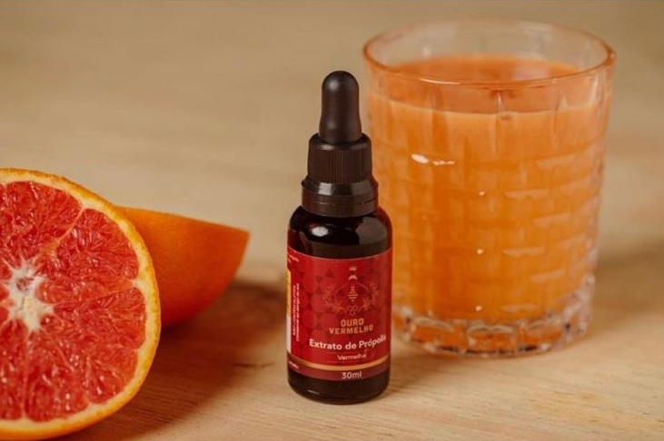

Sobre a Ouro Vermelho Própolis
Vindo diretamente de Alagoas a Própolis Ouro Vermelho traz para o mercado o que há de melhor para a sua saúde. Fundada em 2018, a Ouro Vermelho Própolis já é destaque no país e conquista novos clientes a cada dia.
Nossa missão é: "Proporcionar saúde e qualidade de vida aos clientes".
Oferecemos a própolis mais raro e eficaz do mercado, a própolis vermelha. O atendimento possui padrão de excelência e agilidade, garantindo qualidade e satisfação dos nossos clientes.
Benefícios da Própolis Vermelha:
- Auxilia no tratamento de dores de garganta e resfrados
- Fortalece o sistema imunológico
- Tem ação antinflamatória
- Resultado no combate ás células cancerigenas
- Ação antioxidante
- Eficaz no tratamento de dermatites, feridas e úlceras
- Ação anestésica nas dores de garganta amigdalite e dores de dente
- Efeito imunoestimulante
- Resultados positivos no controle de diabetes, hipertensão e HIV
- Atividade antimicrobiana
- Alto poder cicatrizante
- Novos estudos indicam o auxílio no tratamento do Corona vírus